云间日麻 · 非特效装扮 R16
新增 232 个可选装扮；满贯以下跳过角色横幅，满贯及以上保留。本页均为实际 Unity 游戏截图。185 项引擎、11 项 Python、1045 项本批 Unity 运行检查通过；未生成新 APK。
实现范围与后续交接 · 核验摘要 · Unity 检查记录
| 类别 | 当前可选 | 新增 |
|---|
| 立直棒 | 62 | +58 |
| 静态桌布 | 66 | +64 |
| 牌背 | 56 | +54 |
| 牌面 | 3 | +1 |
| 头像框 | 24 | +22 |
| 大厅背景 | 20 | +18 |
| 立直音乐 | 17 | +15 |
3 款多层动态桌布尚未接入：捞金鱼、紫霞海岸、星间飞行。新装扮为源参数还原，尚未逐项做原版录像对照。
立直棒列表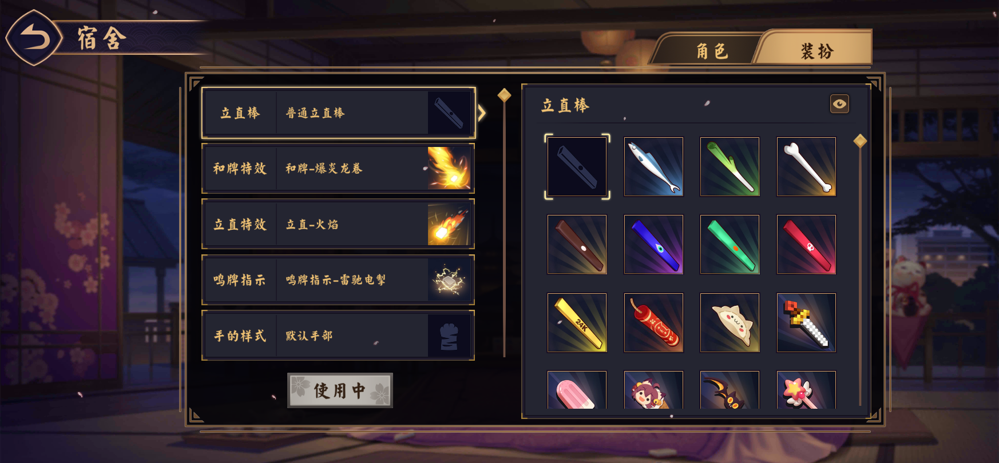
金龙鱼立直棒预览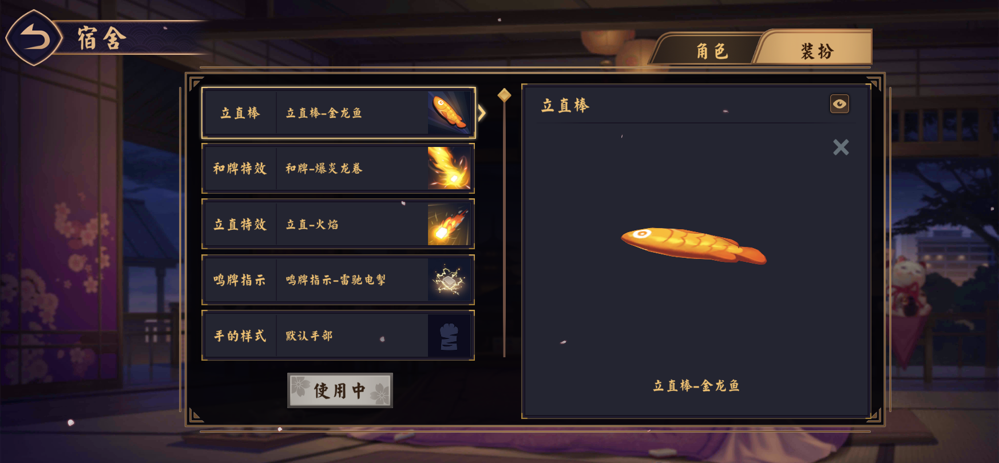
志村新八立直棒预览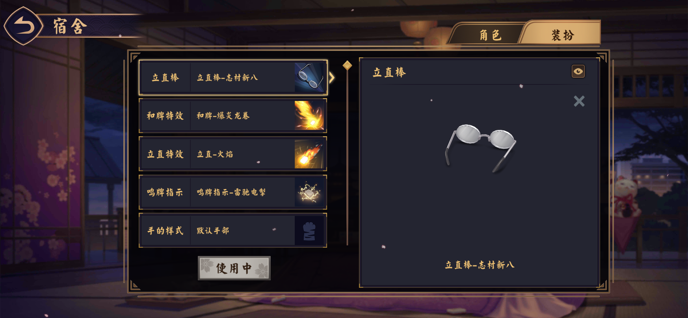
绚烂烟花立直棒预览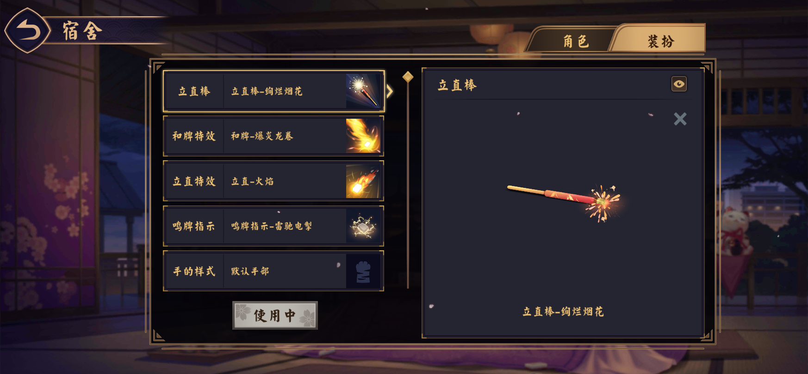
桌布预览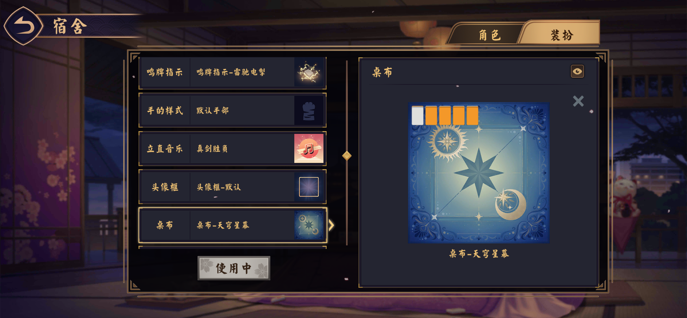
天然呆幽灵牌背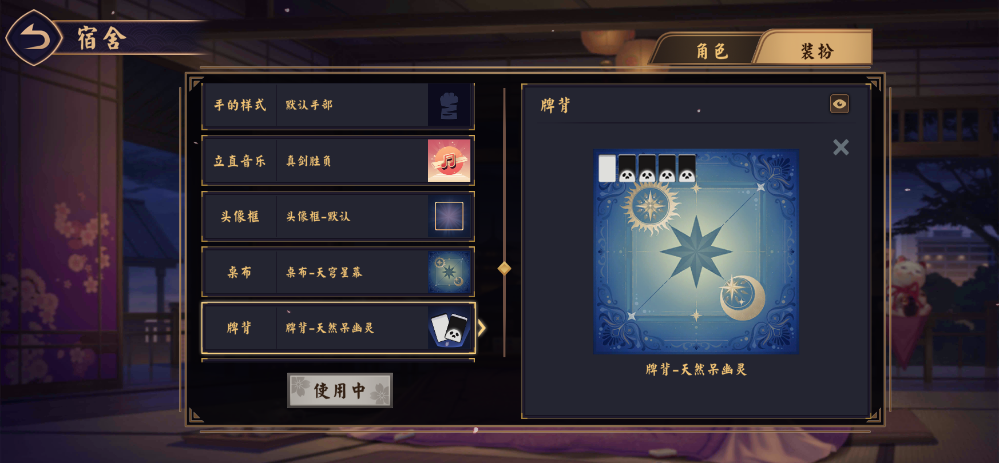
伊丽莎白头像框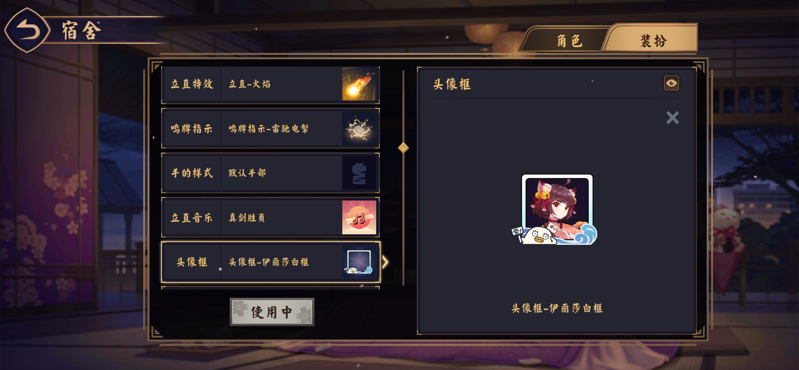
听竹别苑背景预览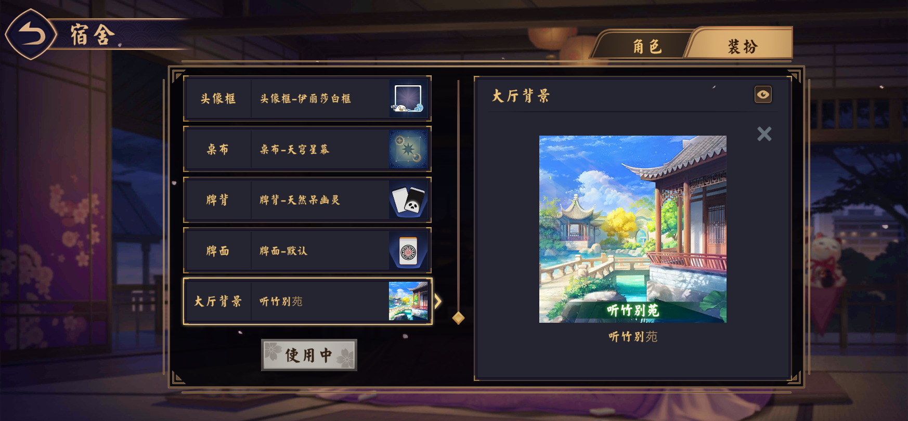
立直音乐选择与试听入口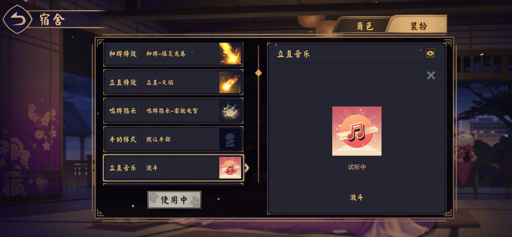
实际大厅背景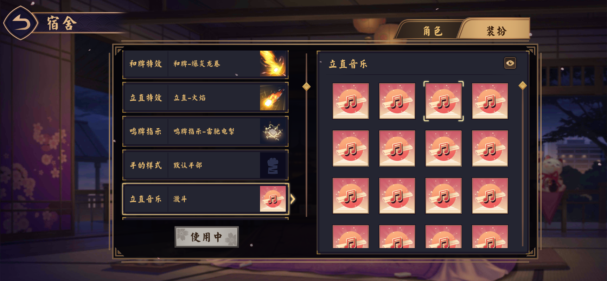
实际牌桌：桌布、牌背、牌面和四人不同立直棒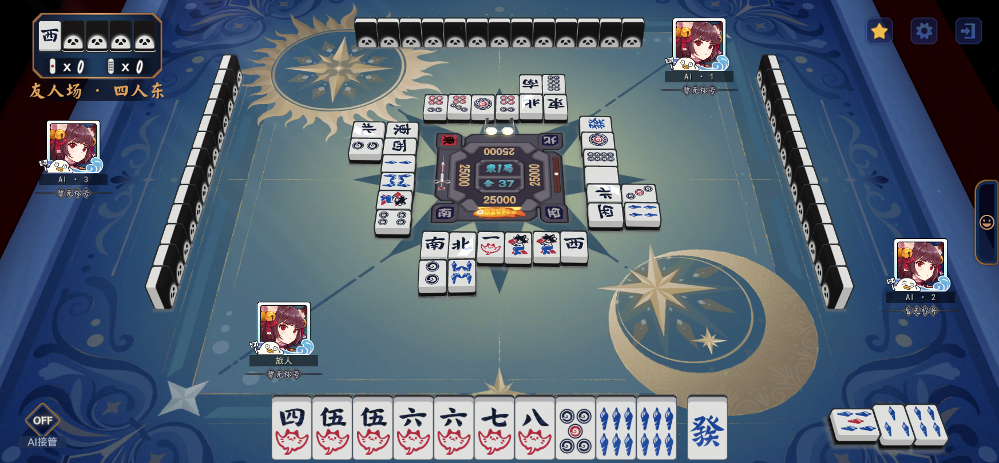
满贯：保留原版角色横幅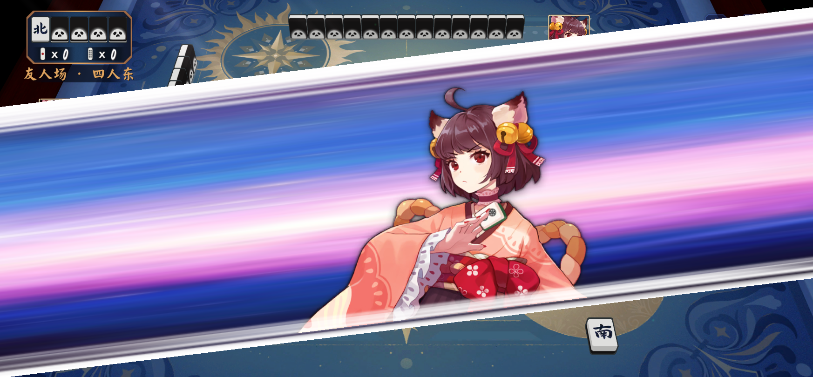
满贯以下：跳过横幅，进入役种展示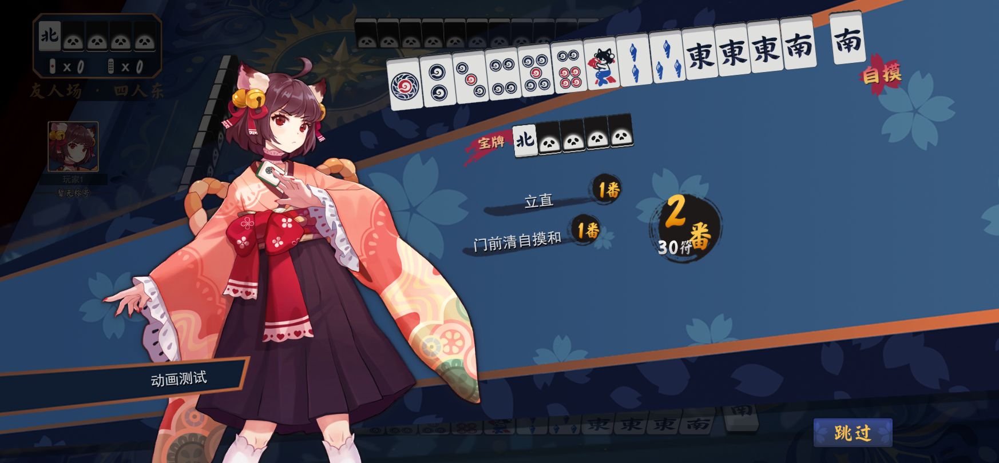
满贯：横幅后的役种展示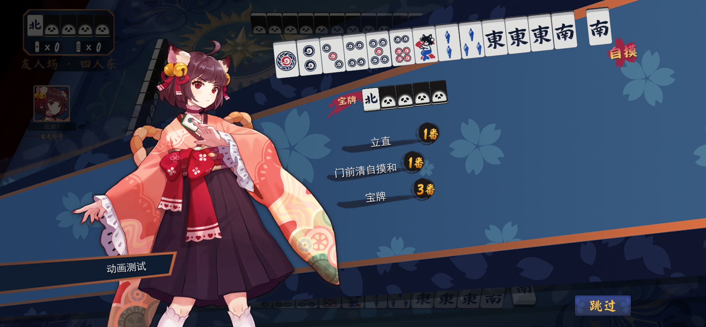
对局音乐：可滚动至末尾曲目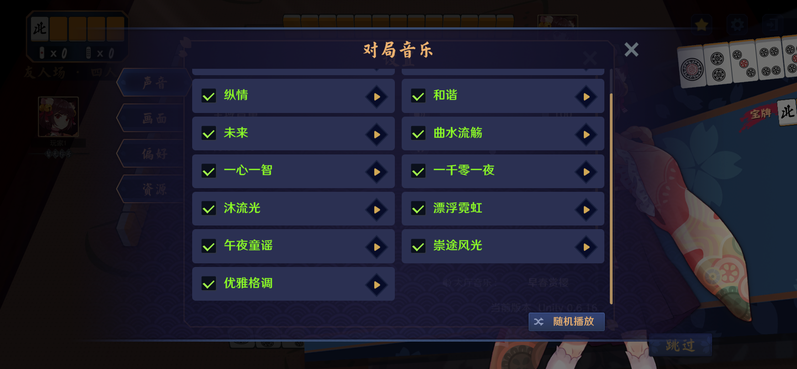